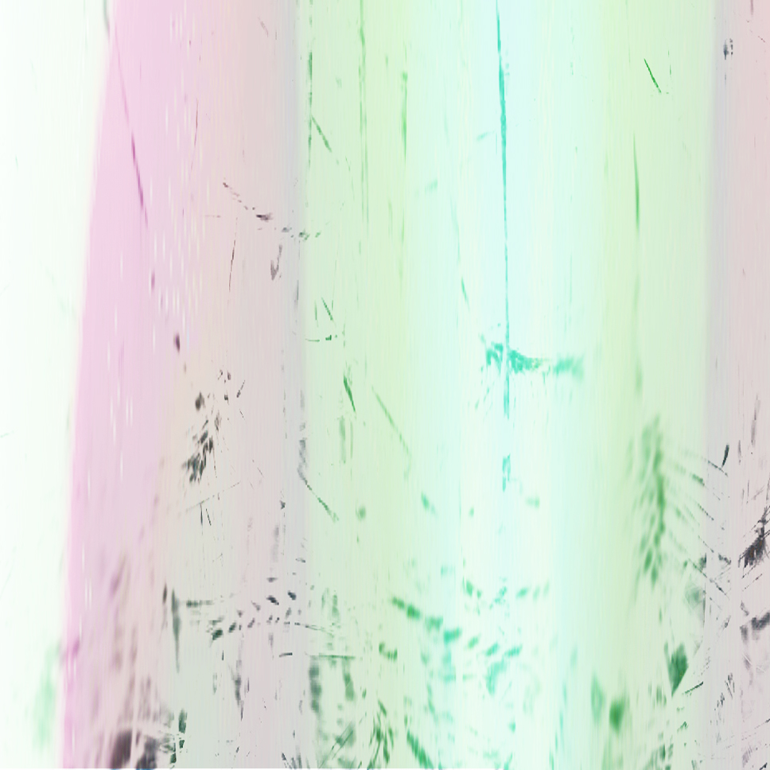

musician, sound engineer and audio programmer based in Bologna (IT).
Working between music producing, live sound engineering and technologies.
|  |
LUMINA (2022) - installation inspired by the “light to wheat” chant
On the night of Carnival, in some of the countryside around Florence, an ancient propitiatory ritual took place during which peasant women and men watched over and illuminated the wheat fields by chanting in chorus the “lumina” or “light to wheat”¹ chant: a choral singsong of pagan origin that wishes wheat plants healthy and strong growth and that warded off the doom of anthrax.
The chant, retrieved by sound artist Agnese Banti from the repertoire of the Maggiaioli of Barberino di Mugello, to whom she is linked by family tradition, meets the study of light language by sound designer and programmer Andrea Trona. The sound composition, featuring the voice of Agnese Banti, and the visual composition, created from a light device designed by Andrea Trona together with sound designer Francesco Vogli, are the result of a collaboration that intertwines the interests of the two artists for sound, space, voice and light.
The installation project, presented in Mugello during the summer 2022 at Foglia Tonda Festival and in e_50035 gallery, aims to evoke this ancient ritual practice in an intimate and unprecedented vision.
Next set up: Bologna, piazza Aldrovandi 19, Tuesday 21st of February 2023, 7-11 pm hrs
| |